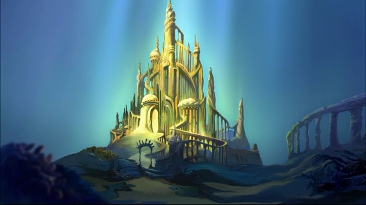
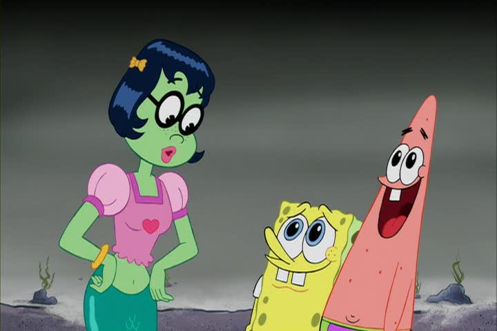
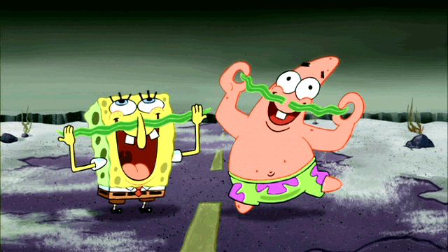

Most Merpeople originate from Atlantis.
Mermaids are known to have magical powers, most of these powers involve water. For example: in documentary mini-series H2O: Just Add Water mermaids were shown to have control over water temperature. They could freeze and heat water with their minds. Merpeople can also move water with their minds. In The SpongeBob SquarePants Movie King Neptunes daughter used her Mermaid Magic to turn Patrick and Spongebob into men, although this was later proven to be a hoax.
 Merpeople can survive on land. It appears that their "legs" turn to tails when they water makes contact with their skin
Merpeople have sensors in their skin that detect even the smallest ammounts of water. These sensors then trigger a proccess that experts call "tailification" in which the merperson's two humanoid legs merge to form a tail with scales. It is still unknown exactly how this process works.